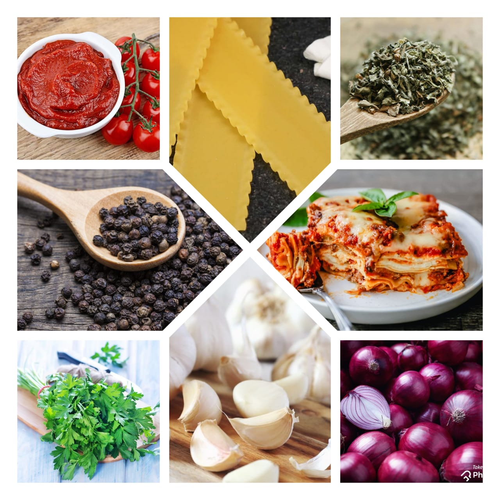

Lasagna
Home
This easy Lasagna Recipe is meaty, cheesy, and packed with flavor in every bite. Homemade lasagna is better than any restaurant version and it feeds a crowd for way less than going out to eat. Lasagna is the perfect meal, and of all of the recipes I've tried over the years, this is the perfect lasagna.
We loved it so much, we even turned it into Lasagna Roll Ups. It's flavorful and satisfying, but also easy to make. It's delicious as-is, but you can make it your own by swapping in your favorite ingredients.
Ingredients
1 pound sweet Italian sausage
¾ pound lean ground beef
½ cup minced onion
2 cloves garlic, crushed
1 crushed tomatoes
2 canned tomato sauce
2 cans tomato paste
½ cup water
4 tbspn chopped parsley, divided
1 ½ tbsp dried basil leaves
1 ½ tbsp salt
1 tbsp Italian seasoning
½ tbsp fennel seeds
¼ teaspoon ground black pepper
12 lasagna noodles
16 ounces(28g) ricotta cheese
1 egg
¾ pound mozzarella cheese, sliced
¾ cup grated Parmesan cheese

Nutrition Facts
Energy 15kj
Total Fat 0.01g
Cholestero 0mg
Sodium 0mg
Total Carbohydrate 0.75g
Vitamin C 0%
vitamin A 0%
Procedure
Cook sausage, ground beef, onion, and garlic in a Dutch oven over medium heat until well browned. Stir in crushed tomatoes, tomato sauce, tomato paste, and water.
Season with sugar, 2 tablespoons parsley, basil, 1 teaspoon salt, Italian seasoning, fennel seeds, and pepper. Simmer, covered, for about 1 1/2 hours, stirring occasionally.
Bring a large pot of lightly salted water to a boil. Cook lasagna noodles in boiling water for 8 to 10 minutes. Drain noodles, and rinse with cold water.
In a mixing bowl, combine ricotta cheese with egg, remaining 2 tablespoons parsley, and 1/2 teaspoon salt. Preheat the oven to 375 degrees F (190 degrees C).
To assemble, spread 1 1/2 cups of meat sauce in the bottom of a 9x13-inch baking dish. Arrange 6 noodles lengthwise over meat sauce. Spread with 1/2 of the ricotta cheese mixture. Top with 1/3 of the mozzarella cheese slices. Spoon 1 1/2 cups meat sauce over mozzarella, and sprinkle with 1/4 cup Parmesan cheese.
Repeat layers, and top with remaining mozzarella and Parmesan cheese. Cover with foil: to prevent sticking, either spray foil with cooking spray or make sure the foil does not touch the cheese.
Bake in the preheated oven for 25 minutes. Remove the foil and bake for an additional 25 minutes. Rest lasagna for 15 minutes before serving.
Expert Guide
Back ←
Scroll to Top ↑